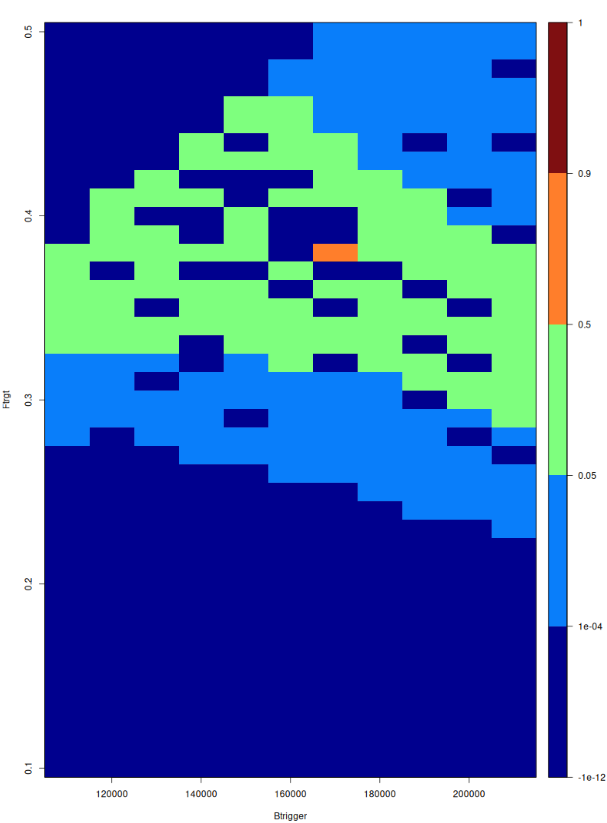
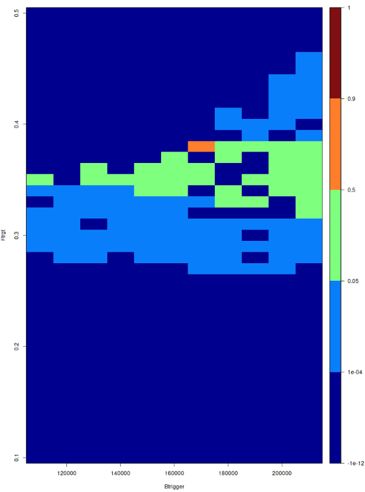
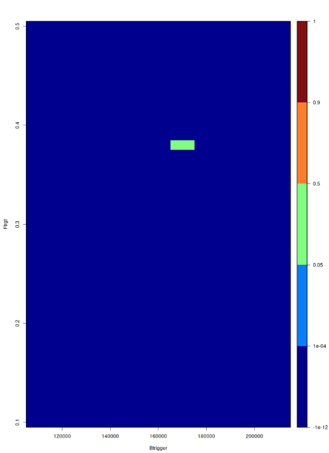
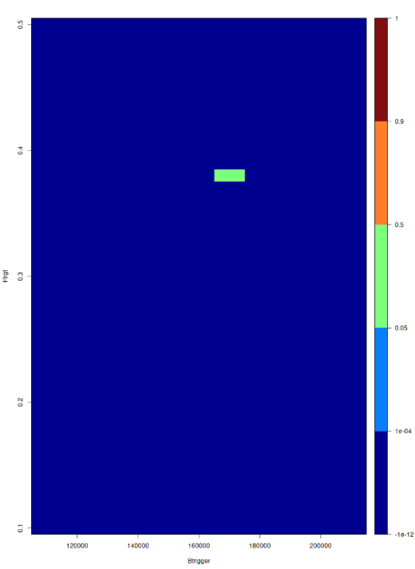

Kernel and Mean Experiments Explained
Introduction
Along with my project supervisor, I decided to run some experiments determining whether changing the kernel and mean used in case_study8.R would have an effect on the value it determined as the optimal point. This was due to the fact that the exponential kernel, also called the Ornstein–Uhlenbeck correlation function, currently being used in the code (shown in Equation 1) was not as smooth as the Gaussian kernel (general form shown in Equation 2). This was pointed out and questioned by my supervisor as the Gaussian kernel is more widely used (Williams and Rasmussen 2006).
\[ r_i(\phi,\phi',\delta_i) = \textrm{exp}\left(-\frac{|\phi_1-\phi_1'|}{\delta_{i,1}} - \frac{|\phi_2-\phi_2'|}{\delta_{i,2}}\right) \tag{1}\]
\[ r(\phi) = \textrm{exp}\left(-\frac{r^2}{2l^2}\right) \tag{2}\]
The mean was also identified as a possible issue. By assuming a very specific mean (shown below Equation 3) for the Gaussian Process (GP) we are assuming that we know a lot about the objective function \(f\) (which is what we are modeling with our GP) (Williams and Rasmussen 2006). Thus, it was suggested that I change the code to a zero mean which is commonly done when we do not want to make any assumptions about our objective function (Williams and Rasmussen 2006).
\[ \begin{split} m_1(\phi) = \beta_{1,0} + \beta_{1,1}(ln(\phi_1 +0.1))+\beta_{1,2}(ln(\phi_1+0.1))^2+ \\ \beta_{1,3}(ln(\phi_1+0.1))^3+\beta_{1,4}(\phi_2ln(\phi_1+0.1))+\beta_{1,5}\phi_2 \end{split} \tag{3}\]
where \[\phi_1 = \frac{F_{target}-0.1}{0.4} \quad \textrm{and} \quad \phi_2 = \frac{B_{trigger}-110000}{90000}\]
and all of the above \(\beta_{s,t}\) for \(s \in \{1,2\}\) and \(t \in \{1,2,3,4,5\}\) are coefficients to be found.
Experimenting with the kernel
The assumption made by the Gaussian kernel of infinite differentiability can be too strong for real-world processes as it is very smooth (Williams and Rasmussen 2006). The GP will create a very smooth surface due to the very smooth assumption in the Gaussian kernel (Williams and Rasmussen 2006). If a new point we sample does not fit this assumption, then the GP is unsure how to proceed and so sets the variance very high as if it knew nothing, sometimes called a variance explosion (Williams and Rasmussen 2006). This results in many points that had been deemed implausible returning and this is likely to continue unless different sampling points are chosen (Williams and Rasmussen 2006). It is instead recommended that we use a kernel from the Matern class of kernels, which includes the exponential kernel (Williams and Rasmussen 2006).
My experiments appear to back up this theory. Using the exponential kernel, in our case the GP converges to a solution after seven rounds. After changing the kernel to be the Gaussian kernel or the Matern kernel with \(\nu = \frac{5}{2}\) it can be seen that neither of these alternatives converge after seven rounds . In each heatmap below, we are plotting how likely the model thinks it is that this point will be a solution with higher catch, but still precautionary. Any areas with a probability less than 1e-04 of having a higher catch than the current best and being precautionary have been ruled out as implausible and are displayed as dark blue.



Similar results occur when we run the method once it has been augmented by an acquisition function. As we then allow the method to continue until it has converged, we find that the different kernels cause convergence in a different number of rounds. For example, looped_ver_case_study8_mult_point_EI.R converges after seven rounds with the exponential kernel, but after changing to the Gauss kernel it converges after twenty five rounds. When using the Matern 5/2 kernel, the GP does not converge to the correct point.



Experimenting with the mean
Setting the mean of the GP to zero as in Listing 1 is more often done in examples to showcase the key concepts than when implementing these methods in real-world situations (Williams and Rasmussen 2006). My experiments seem to back up this theory as they again show results that are the same or worse than our original approach.
gp_cat <- km(~0,design=runs[,c("Ftarget","Btrigger")],estim.method="MLE",
response = res_cat,nugget=1e-12*var(res_cat),covtype = "exp")We can see from the heatmaps below that the simulations with means changed to zero either converge at the same round or later on than when we use the original mean specified in (Spence 2025). This is likely to be because we are able to encode information that we already know about how fisheries and stocks operate when using the original mean, which helps the GP to narrow down to the optimal point in less rounds (Spence 2025), (Williams and Rasmussen 2006).


